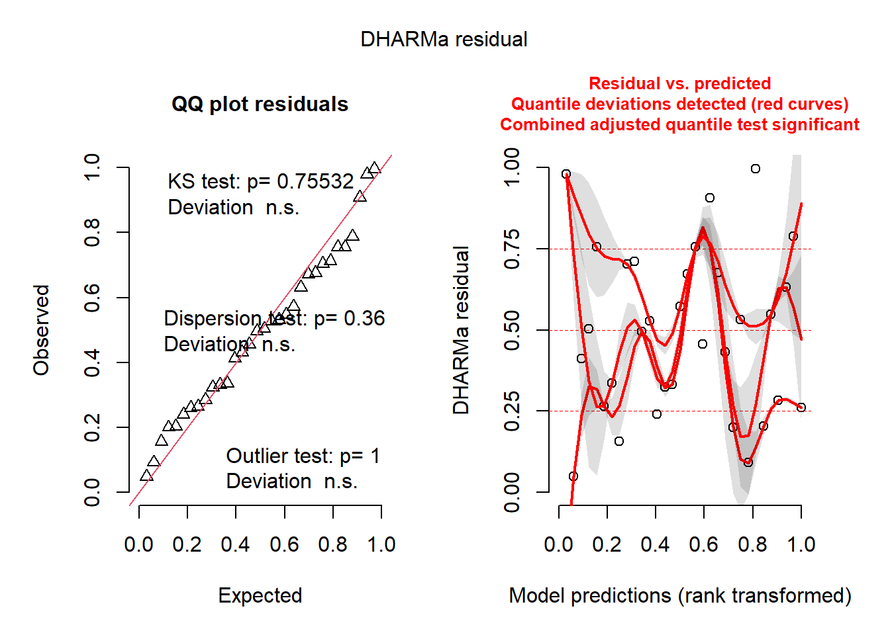
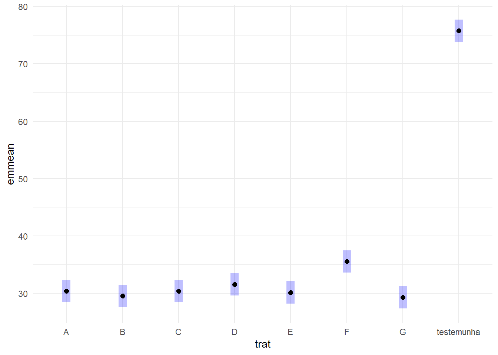

library(readxl)
library(tidyverse)
#delineamento em blocos casualisados
#efeito fixo (bloco): trat + bloco
fungicidas <- read_excel("dados-diversos.xlsx", "fungicida_campo")DBC
Aula 12
Delineamento em blocos casualisados
Modelo ANOVA com bloco
#sev (resposta)
#diferença do dic é o rep
aov_fung <- aov(sev ~ trat + rep, data = fungicidas)
summary(aov_fung) Df Sum Sq Mean Sq F value Pr(>F)
trat 7 7135 1019.3 287.661 <2e-16 ***
rep 1 19 18.6 5.239 0.0316 *
Residuals 23 81 3.5
---
Signif. codes: 0 '***' 0.001 '**' 0.01 '*' 0.05 '.' 0.1 ' ' 1#se não der significativo, deixa o bloco, pq o delineamento foi em blocoChecar premissas
#verificar as premissas
library(performance)
#ou
library(DHARMa)
check_normality(aov_fung)OK: residuals appear as normally distributed (p = 0.230).check_heteroscedasticity(aov_fung)OK: Error variance appears to be homoscedastic (p = 0.484).#plot do DHARMA
plot(simulateResiduals(aov_fung))
library(emmeans)
#rodar a média (aov_fung em função de trat)
means_fung <- emmeans(aov_fung, ~ trat)
library(multcomp)
library(multcompView)
cld(means_fung) trat emmean SE df lower.CL upper.CL .group
G 29.2 0.941 23 27.3 31.2 1
B 29.5 0.941 23 27.6 31.4 1
E 30.1 0.941 23 28.2 32.1 1
C 30.4 0.941 23 28.4 32.3 1
A 30.4 0.941 23 28.4 32.3 1
D 31.5 0.941 23 29.6 33.4 12
F 35.5 0.941 23 33.6 37.4 2
testemunha 75.8 0.941 23 73.8 77.7 3
Confidence level used: 0.95
P value adjustment: tukey method for comparing a family of 8 estimates
significance level used: alpha = 0.05
NOTE: If two or more means share the same grouping symbol,
then we cannot show them to be different.
But we also did not show them to be the same. plot(means_fung)+
coord_flip()+
theme_minimal()
Bloco com parcela subdividida
milho <- read_excel("dados-diversos.xlsx", "milho")
#Base R
#DBC
#model
#bloco com parcela subdividida precisa de estrutura de erro (bloco, parcela principal, subparcela)(Error)
aov_milho_bloco <- aov(index ~ factor(block) + hybrid*method +
Error(factor(block)/hybrid/method), data = milho)
summary(aov_milho_bloco)
Error: factor(block)
Df Sum Sq Mean Sq
factor(block) 3 592.2 197.4
Error: factor(block):hybrid
Df Sum Sq Mean Sq F value Pr(>F)
hybrid 5 974.2 194.84 3.14 0.0389 *
Residuals 15 930.9 62.06
---
Signif. codes: 0 '***' 0.001 '**' 0.01 '*' 0.05 '.' 0.1 ' ' 1
Error: factor(block):hybrid:method
Df Sum Sq Mean Sq F value Pr(>F)
method 1 79.61 79.61 4.726 0.0433 *
hybrid:method 5 265.28 53.06 3.150 0.0324 *
Residuals 18 303.18 16.84
---
Signif. codes: 0 '***' 0.001 '**' 0.01 '*' 0.05 '.' 0.1 ' ' 1#usando avo não permitiu checar a normalidade, usar outro modelo (misto)Modelo misto
#lme4 - pacote que permite checar as premissas. O modelo misto é mais moderno que o aov
library(lme4)
#usando bloco
milho$block <- as.factor(milho$block)
#sqrt para transformar os dados e atender a heterocedasticidade
mix2 <- lmer(sqrt(index) ~ block + hybrid*method +
(1|block/hybrid), data = milho)
library(car)
#anova no modelo misto não dá o p-valor, só o F. Então, do pacote car, usar anova com A maiusculo
Anova(mix2)Analysis of Deviance Table (Type II Wald chisquare tests)
Response: sqrt(index)
Chisq Df Pr(>Chisq)
block 0.0764 3 0.994506
hybrid 15.4171 5 0.008721 **
method 3.9239 1 0.047605 *
hybrid:method 13.3025 5 0.020703 *
---
Signif. codes: 0 '***' 0.001 '**' 0.01 '*' 0.05 '.' 0.1 ' ' 1check_normality(mix2)OK: residuals appear as normally distributed (p = 0.422).check_heteroscedasticity(mix2)OK: Error variance appears to be homoscedastic (p = 0.970).#comparação de médias
#inverter hybrid e method para fazer outra comparação
means_mix2 <- emmeans(mix2, ~ hybrid|method)
means_mix2method = pin:
hybrid emmean SE df lower.CL upper.CL
30F53 HX 5.00 1.17 5356 2.69 7.30
30F53 YH 4.95 1.17 5356 2.65 7.25
30K64 4.50 1.17 5356 2.20 6.81
30S31H 6.10 1.17 5356 3.79 8.40
30S31YH 5.63 1.17 5356 3.33 7.93
BG7049H 4.40 1.17 5356 2.10 6.71
method = silk:
hybrid emmean SE df lower.CL upper.CL
30F53 HX 4.94 1.17 5356 2.64 7.25
30F53 YH 5.10 1.17 5356 2.80 7.41
30K64 4.61 1.17 5356 2.31 6.91
30S31H 5.13 1.17 5356 2.83 7.43
30S31YH 5.14 1.17 5356 2.84 7.44
BG7049H 4.37 1.17 5356 2.07 6.67
Results are averaged over the levels of: block
Degrees-of-freedom method: kenward-roger
Results are given on the sqrt (not the response) scale.
Confidence level used: 0.95 cld(means_mix2) #na tabela, letras maiúsculas comparam na coluna e minúsculas na linhamethod = pin:
hybrid emmean SE df lower.CL upper.CL .group
BG7049H 4.40 1.17 5356 2.10 6.71 1
30K64 4.50 1.17 5356 2.20 6.81 1
30F53 YH 4.95 1.17 5356 2.65 7.25 12
30F53 HX 5.00 1.17 5356 2.69 7.30 12
30S31YH 5.63 1.17 5356 3.33 7.93 12
30S31H 6.10 1.17 5356 3.79 8.40 2
method = silk:
hybrid emmean SE df lower.CL upper.CL .group
BG7049H 4.37 1.17 5356 2.07 6.67 1
30K64 4.61 1.17 5356 2.31 6.91 1
30F53 HX 4.94 1.17 5356 2.64 7.25 1
30F53 YH 5.10 1.17 5356 2.80 7.41 1
30S31H 5.13 1.17 5356 2.83 7.43 1
30S31YH 5.14 1.17 5356 2.84 7.44 1
Results are averaged over the levels of: block
Degrees-of-freedom method: kenward-roger
Results are given on the sqrt (not the response) scale.
Confidence level used: 0.95
Note: contrasts are still on the sqrt scale
P value adjustment: tukey method for comparing a family of 6 estimates
significance level used: alpha = 0.05
NOTE: If two or more means share the same grouping symbol,
then we cannot show them to be different.
But we also did not show them to be the same.